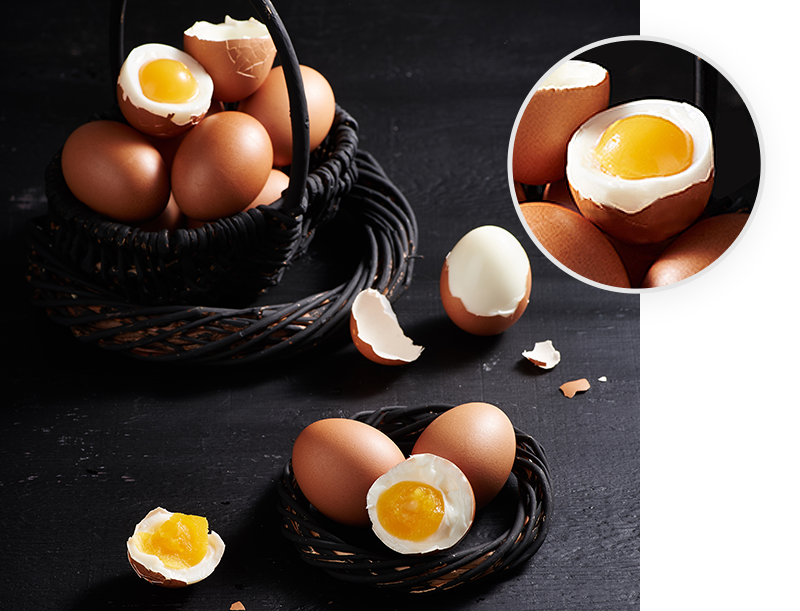

삶은계란의 거장

감동란의 감동적인 맛의 비결은 무엇일까요?
[맛있는 비밀 THE SECRET OF DELICACY]
-
계란에 일생을 바친 한 남자가 있습니다.
껍질을 까지 않아도 소금간이 되어있는 맛있는 삶은 계란을 목표로
그는 수많은 실험과 연구를 반복하였습니다. -
셀 수 없는 실패를 거듭하며 좌절하던 때도 있었지만
계란 하나만을 바라보고 걸어온 40년을 장인은 포기하지 않았습니다. - ' 더 맛있게, 더 안전하게, 더 건강에 좋은 계란을 만들고 싶다. '
- 감동란에는 한 남자의 40년 역사가 새겨져 있는 것입니다.